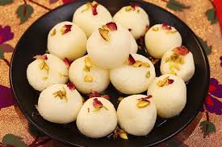

üçÆ Rasgulla

Ingredients
- 1 liter full-fat milk
- 1/4 cup lemon juice or vinegar
- 2 cups water
- 1 cup sugar
- 1 tsp rose water (optional)
Instructions
- Heat the milk in a heavy-bottomed pan. Once it comes to a boil, reduce the heat to low.
- Slowly add lemon juice or vinegar to the milk and stir. The milk will curdle and separate into whey and chhena (paneer).
- Once the curdling is complete, strain the mixture using a cheesecloth or muslin cloth to separate the chhena from the whey. Rinse the chhena under cold water to remove the lemon/vinegar taste.
- Press out the excess water from the chhena and knead it into a smooth dough.
- Divide the dough into small equal-sized balls and set them aside.
- In a large pan, bring water and sugar to a boil. Stir until the sugar dissolves completely to make the sugar syrup.
- Gently drop the prepared chhena balls into the boiling sugar syrup and cook for 15–20 minutes. The rasgullas will expand as they cook.
- Once they have cooked, remove the pan from the heat and let the rasgullas soak in the syrup for at least 1 hour before serving.
Serve With
- Chilled, served in its syrup.
üí° Tip: For a richer flavor, add a few drops of rose water to the syrup.